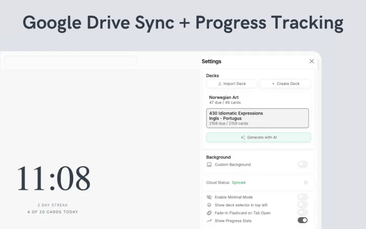
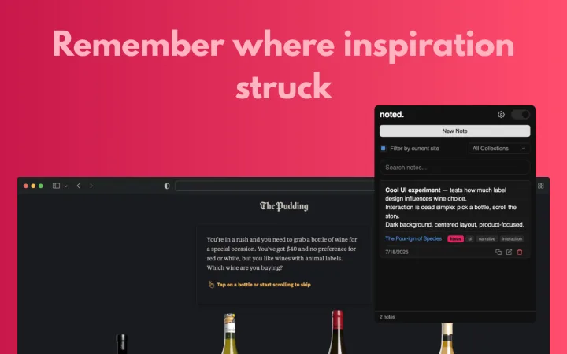
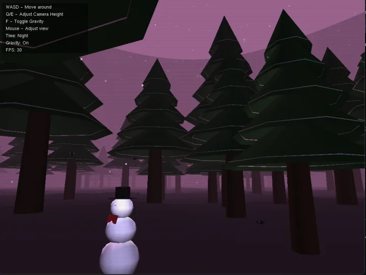
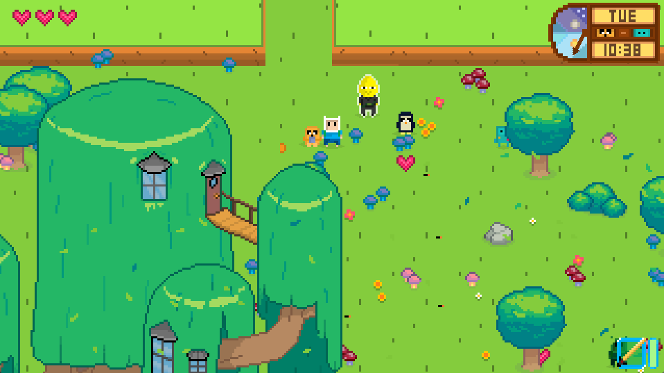

Full stack developer in Newcastle upon Tyne. First Class Honours in Computer Science from Northumbria University, 2026. Co-founder of SigmaEdge, where I work across a Go and PostgreSQL backend and a Next.js frontend. I build trading systems, iOS apps and browser extensions — focused on clean, useful software.
Projects
SigmaEdge
co-founder private betaTrading analytics platform serving pre-computed statistical edges and macro scoring. Go backend over PostgreSQL, live Rithmic market data, Next.js frontend.
Buildr
featured iOSSwipe-based iOS app matching people to projects and co-founders. SwiftUI, Firestore, real-time chat, skill-graph matching and a StoreKit paywall.

MicroBloom
featured 5.0★ 26+New-tab flashcard extension with spaced repetition. Import Anki decks or let AI generate decks from any text.

noted.
featured 5.0★ 159+Minimal note-taking extension that links notes to the website they came from. Tags, instant search, offline support.

PySnow-GL
3D winter scene in OpenGL and Python — procedural terrain, particle snow, fog, gravity, and a first-person camera.

Adventure Time Fangame
2D adventure game inspired by Adventure Time — exploration, interactive elements, and inventory management in GameMaker.